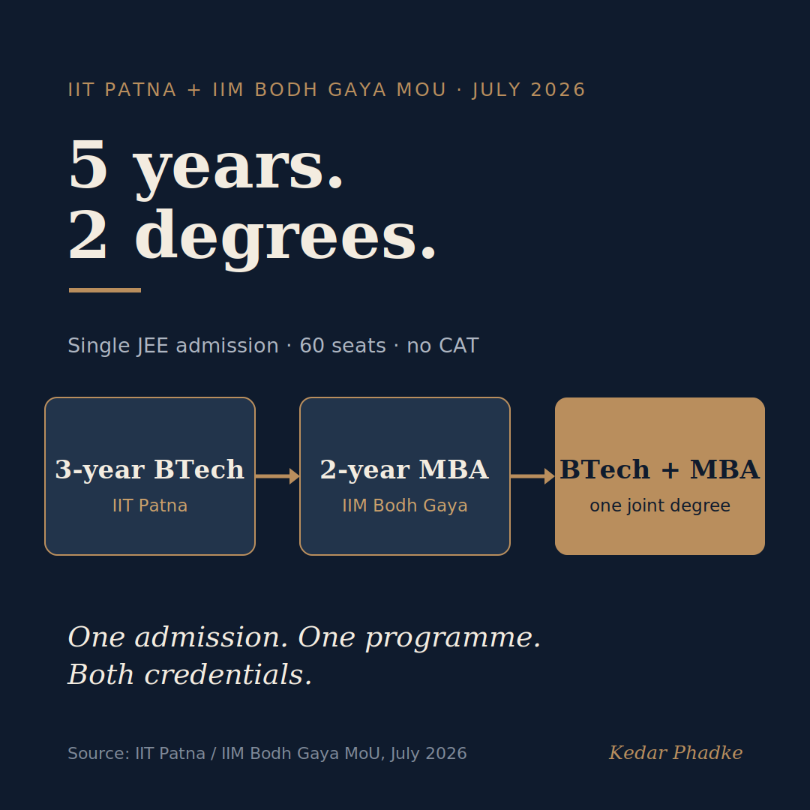

Two Degrees, One Path
In mid-July, IIT Patna and IIM Bodh Gaya signed a formal agreement that has stayed on my mind.
The two institutions have created a five-year integrated programme: three years for a BTech at IIT Patna, followed by two years for an MBA at IIM Bodh Gaya. Admission is through JEE, with 60 seats available. Students do not need to take the CAT or apply separately for the MBA. They start as engineering students and graduate with both degrees, in the same time it usually takes to finish one and begin considering the other.
It sounds like an operational detail. It isn't.

A Gap India's Top Institutions Are Finally Closing
For decades, India's engineering and management schools have worked separately, with little overlap. One teaches how systems work. The other teaches how organisations decide. Industry wants both. It often gets neither.
From what I have seen, the graduates who advance the quickest are rarely pure technicians or pure strategists. They are people who learned to work in both registers. They can build something rigorous, and also explain it, defend it, and adapt it when the ground shifts. In the past, that skill set usually came from years of hard experience, or costly programmes after graduation.
The IIT-IIM model is a structural bet that these combined skills can be built in from the start.
Intent Is Not Enough
Here is the honest read.
Before there was a formal framework, students in this programme told the Indian Express in June that they still did not have clear information about fees, course structure, or placement outcomes, even after two years. The July MoU addresses these issues by formalising credit transfers, curriculum integration, admission steps, and governance.
Announcing an interdisciplinary programme is the easy part. Running one is the hard part.
This is a positive step. However, it also highlights the difference between announcing an interdisciplinary programme and making it work in practice. Setting up the administration is the easier part. The real challenge is ensuring that graduates truly learn to think in both ways, rather than just earning two certificates.
Every institution trying this model will need to answer this question.
Bigger Moves Are Coming
This programme is not the only one of its kind. In early July, the government and NASSCOM said they are working together to redesign the AI curriculum for undergraduates across India. Karnataka's Chief Minister also announced the country's first government-run AI university at Google I/O Connect India 2026. The trend is clear: institutions are starting to address a gap that single schools, working alone, cannot close.
If you are an early-career professional, you probably did not graduate from a five-year dual-degree programme. Most people did not. Still, the question this programme raises is relevant to you.
The best engineers I have worked with who moved into leadership roles developed management thinking on purpose, not by chance. Some earned MBAs, but most did not. What they shared was a willingness to learn the parts of the job their degree did not cover, and they stayed curious about it.
If you are an engineer who had to learn management skills, or an MBA who needed to understand technical basics, I'd like a specific answer: what is the one thing you had to learn on your own that your degree did not prepare you for?
#HigherEducation #EngineeringEducation #ManagementEducation #FutureOfWork #IndiaEvery factual claim here was verified against independent reporting. The anchor is an institutional action by two government-funded institutions, not a vendor or marketing source.
The programme
- IIM Bodh Gaya and IIT Patna official statement (via PNI News), July 2026: the five-year 3+2 structure, 60 seats, JoSAA admission on JEE ranks, no CAT.
- Careers360 and Shiksha, independent confirmation of the structure and admission route.
The students' concerns
- The Indian Express (June 2026) first reported students flagging unclear fees, structure, and placements; that piece is paywalled. Corroborated in open coverage: EduAdvice (13 June 2026, confirming the programme began in AY 2023-24) and EdInbox.
Supporting context
- Business Standard (12 July 2026) on the government-NASSCOM undergraduate AI curriculum work, quoting NASSCOM President Rajesh Nambiar.
- Business Standard (14 July 2026) on Karnataka's first government-run AI university, announced at Google I/O Connect India 2026.
A version of this essay was first shared on LinkedIn.